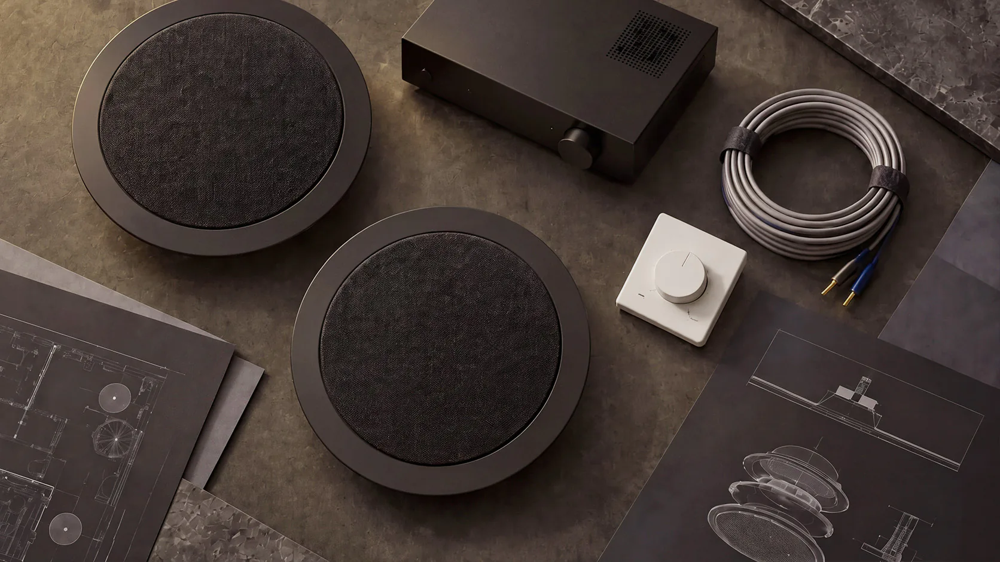
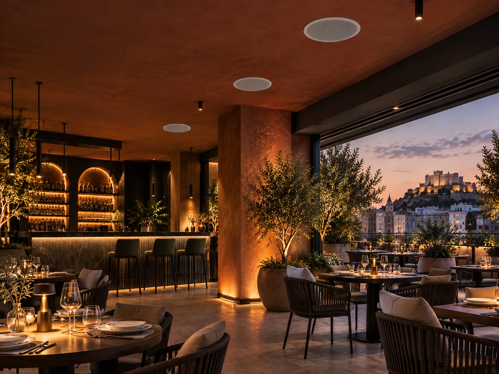
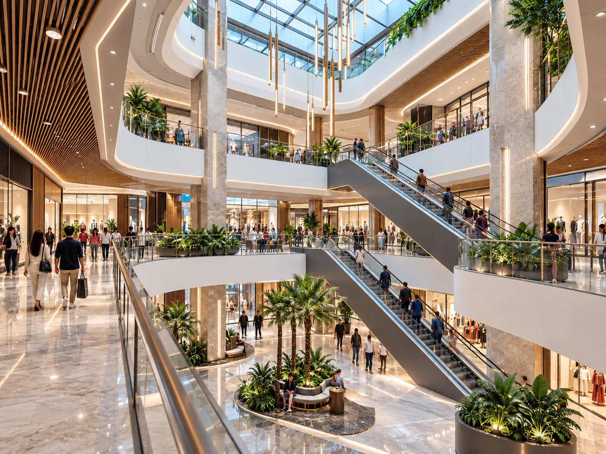
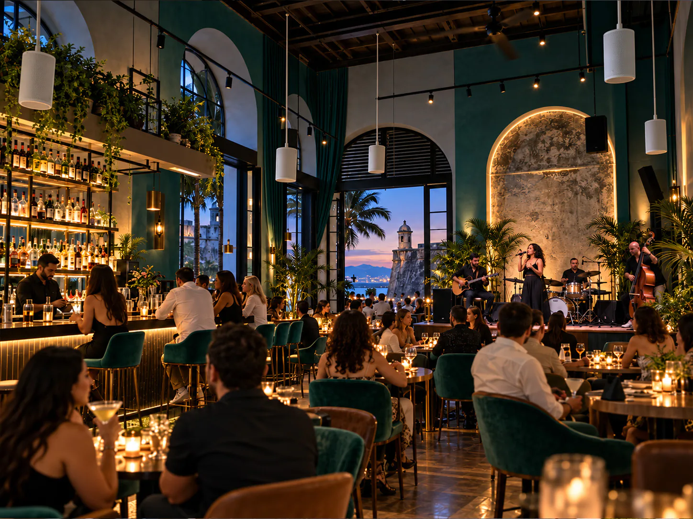
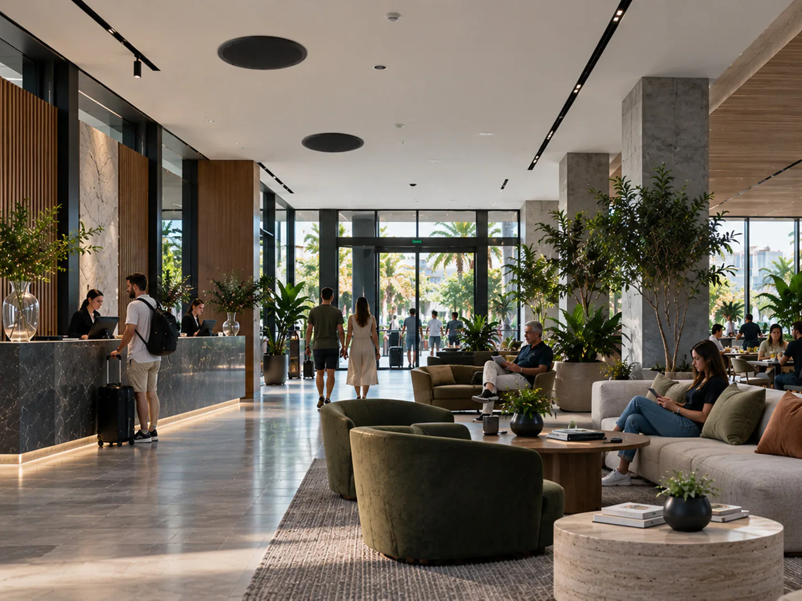

Proyectos de sonorización en AlicanteProyectos Realizados
Ejemplos de sonorización comercial instalada por nuestro equipo en Alicante y la Comunidad Valenciana

RestauranteRestaurante — Alicante Centro
Sonorización de comedor y terraza con música ambiental independiente por zonas.
- 12 altavoces de techo DAS Audio
- Amplificador 100V multizona
- Plazo: 2 días

Centro ComercialCentro Comercial — Elche
Sistema zonificado de música ambiental y avisos para tres plantas de local comercial.
- 48 altavoces de techo empotrables
- 3 zonas independientes
- Línea 100V con reguladores
 Gimnasio
GimnasioGimnasio — Benidorm
Audio potente para zonas de pesas y música ambiental para área de cardio y clases.
- 16 altavoces resistentes a humedad
- Subgraves en zona de pesas
- Control desde móvil

Café-BarCafé-Bar — San Juan
Altavoces colgantes DAS Audio para techo alto, diseño minimalista y sonido envolvente.
- 8 altavoces colgantes
- Acabado blanco
- Instalación en 1 día

HotelHotel — Alicante
Música ambiental para lobby, recepción y desayunador con fuente de música en red.
- 24 altavoces de techo
- Reproductor multimedia
- Avisos automáticos
 Retail
RetailTienda de Ropa — Alicante
Ambiente sonoro uniforme en sala de ventas y probadores, invisible para el cliente.
- 8 altavoces empotrados
- Amplificador compacto
- Plazo: 1 día
¿Necesitas Asesoramiento Profesional?
Contáctanos para una consulta gratuita y un presupuesto personalizado